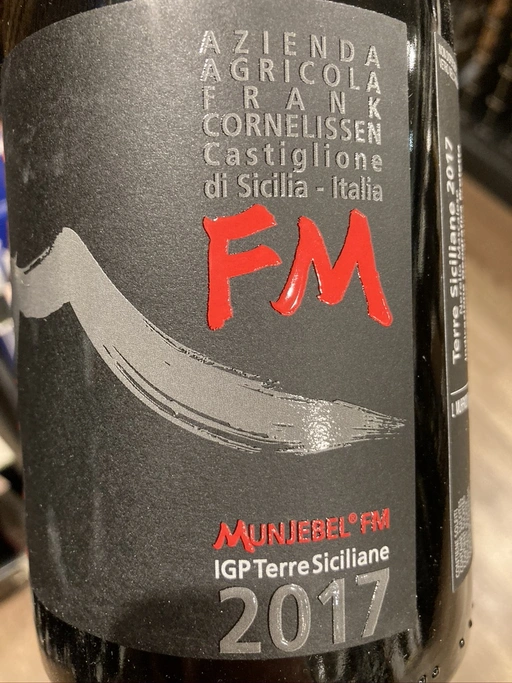

- Type
- Red Still, Dry
- Producer
- Frank Cornelissen
- Vintage
- 2017
- Location
- Italy, IGP Terre Siciliane
- Grapes
- Nerello Mascalese
- Alcohol
- 15
- Sugar
- 1
- Price
- 1690 UAH
- Cellar
- N/A
Ratings
2020-11-13 - 7.00
Smoked red fruits, cherry and tobacco, subtle hints of nail polish (actually this is the first thing I’ve noticed, but VERY LONG aeration made it subtle). Powerful and green. Lacks complexity and elegance, I would not recognize Nerello Mascalese here.